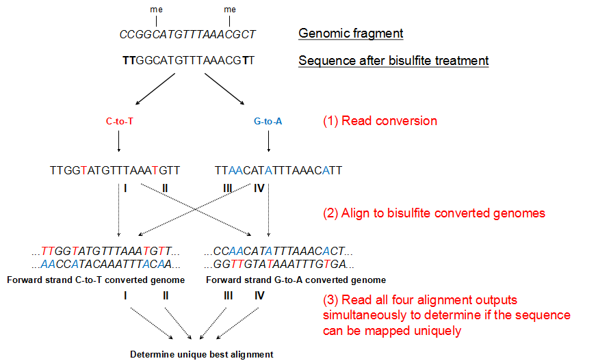
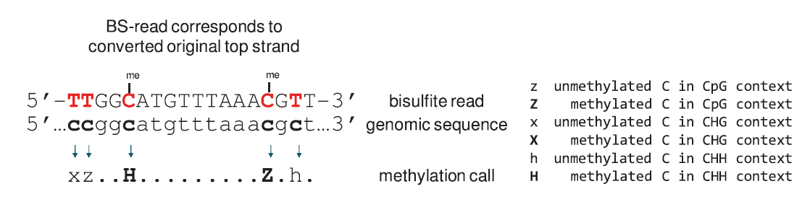

诺禾致源DNA甲基化生物信息分析结题报告
项目编号：XXXXXXXX-XXX-F002
合同名称：WGBS测试项目
报告时间：2021年06月15日
报告编号：XXXXXXXX-XXX-F002-36
引言
DNA甲基化是一种被广泛研究的表观遗传修饰方式，与组蛋白修饰等方式一起，在调控基因表达和染色质构象等方面发挥了重要作用。通常地，甲基化DNA指5-甲基胞嘧啶（5mC），它是在DNA甲基转移酶（DNMT）的作用下将甲基基团添加到胞嘧啶的5’C位置上形成的结构（Vertino PM, 1996）。哺乳动物细胞中甲基化主要发生在CG双核苷酸的胞嘧啶上（Goldberg AD, 2007），植物细胞中则存在很大比例的non-CG（CHH、CHG，H代表A、C、T）甲基化（Jackson JP, 2002）。
一般来说，高DNA甲基化水平会抑制基因表达，去甲基化则可以使得基因重新表达。DNA甲基化参与了众多的细胞生命活动，包括细胞分化、组织特异性基因表达、基因组印记、X染色体失活等（Bird A, 2002; Jones PA, 2001; Reik W, 2003）。异常的DNA甲基化会导致发育异常、肿瘤等疾病的发生。因此，DNA甲基化的研究对于深入理解基因表达、个体发育以及疾病的发生、发展机制都具有重要意义。
一、建库测序流程
从DNA样品( 细胞样本 )到最终数据获得，样品检测、建库、测序每一个环节都可能会对数据质量和数量产生影响，而数据质量又会直接影响后续信息分析的结果。因此，获得高质量数据是保证生物信息分析正确、全面、可信的前提。为了从源头上保证测序数据的准确性、可靠性，诺禾致源对样品检测、建库、测序每一个实验环节都严格把关，从根本上确保高质量数据的产出。
1.DNA样品检测
诺禾致源对DNA样品的检测主要包括3种方法（单细胞项目不进行该部分）：
(1) 琼脂糖凝胶电泳分析DNA降解程度以及是否有RNA污染
(2) Nanodrop检测DNA的纯度（OD260/280比值）
(3) Qubit对DNA浓度进行精确定量
2.文库构建
由于传统建库流程是先加接头再进行Bisulfite处理，建库过程将导致大量DNA模板流失（~90%），造成了极大的损失（Grunau C，2001）。因此，我们采用先进行Bisulfite转化再构建文库的策略（Post-Bisulfite Construction），能够有效规避文库模板损伤，同时，显著降低了DNA起始量，并提高文库丰富度（Fumihito M，2012），获得更多的有效数据。文库构建流程图如下：
3.文库质检
文库构建完成后，先使用Qubit2.0进行初步定量，稀释文库至1ng/μl，随后使用Agilent 2100对文库的插入片段长度进行检测，符合预期后，使用Q-PCR方法对文库的有效浓度进行准确定量（文库有效浓度>2nM），以保证文库质量。
4.上机测序
库检合格后，把不同文库按照有效浓度及目标下机数据量的需求pooling后进行高通量测序（Illumina平台）。测序基本原理为边合成边测序（Sequencing by Synthesis）。在测序的flow cell中加入四种荧光标记的dNTP 、DNA聚合酶以及接头引物进行扩增，在每一个测序簇延伸互补链时，每加入一个被荧光标记的dNTP就能释放出相对应的荧光，测序仪通过捕获荧光信号，并通过计算机软件将光信号转化为测序峰，从而获得待测片段的序列信息。测序过程如下图所示。
三、结果展示及说明
1. 测序数据质量评估（结果文件 1.QualityControl）
高通量测序得到的原始图像数据文件经CASAVA碱基识别（Base Calling）分析转化为测序读段（Sequenced Reads），即原始数据（Raw Data）结果以 FASTQ（简称为fq）文件格式存储。FASTQ是一种存储生物序列（通常是核酸序列）及相应质量评价的文本格式，每条read的信息由下述四行组成：
@HWI-ST1276:71:C1162ACXX:1:1101:1208:2458 1:N:0:CGATGT
NAAGAACACGTTCGGTCACCTCAGCACACTTGTGAATGTCATGGGATCCAT
+
#55???BBBBB?BA@DEEFFCFFHHFFCFFHHHHHHHFAE0ECFFD/AEHH
第一行存储序列标识信息：以“@”开头，随后为Illumina 测序标识别符（Sequence Identifiers）和描述信息（下附详述）； 第二行存储碱基序列；第三行以“+”开头，存储与第一行相同的信息或缺省；第四行存储对应碱基的测序质量：该行中字符为第二行中对应碱基的质量值加上33后转换为的ASCII码，逆向转化即可直观得到每个碱基的质量信息。
举例介绍Illumina测序标识符（Illumina_Identifier）详细信息：
(1) HWI-ST1276:71 标识符为HWI-ST127的测序设备第71次运转；
(2) C1162ACXX:1:1101:1208:2458 表示该read在C1162ACXX(Flowcell ID)的1号line中的1101号tile上的坐标信息为（x=1208,y=2458）；
(3) 1:N:0:CGATGT 第一位数字为1或2，1表示该序列为 single reads 或 paired ends中的第一条，2表示paired ends 中的第二条；第二位字母表示reads是否被矫正过滤（Y表示滤掉，N表示保留）；第三位数字表示序列中的Control Bits数量；第四位六碱基为Illumina index序列信息。
测序过程本身存在发生机器错误的可能性，测序错误率分布检查可以反映测序数据的质量，序列信息中每个碱基的质量值保存在FASTQ文件中，若reads的碱基质量值用QPhred表示，则可计算测序错误率 e=10(-QPhred/10) 或表示为 QPhred=-10log10(e)。Illunima Casava 1.8版本碱基识别与Phred分值之间的简明对应关系见下表：
| Phred分值 | FASTQ中对应质量值（ASCII码） | 错误碱基识别 | 碱基正确识别率 | Q-sorce |
|---|---|---|---|---|
| 10 | + (10+33) | 1/10 | 90% | Q10 |
| 20 | 5 (20+33) | 1/100 | 99% | Q20 |
| 30 | ? (30+33) | 1/1000 | 99.9% | Q30 |
| 40 | I (40+33) | 1/10000 | 99.99% | Q40 |
(1)由于测序过程中试剂逐渐消耗，测序错误率会随 Reads 长度增加而升高，此为illumina高通量测序平台的共有特征（Erlich Y, Mitra PP et al.2008; Jiang L, Schlesinger F et al.2011.）
(2)对于常规甲基化文库，在测序read1和read2会呈现一种方向性的特点：read1 T碱基含量较高，read2 A碱基含量较高
1.1 FastQC (Raw_reads)
随着高通量测序技术的快速发展，通过测序可以获得海量的数据信息，如何从得到的数据中获取合格的数据是信息分析的基础。因此对下机数据进行质量控制（QC）是数据分析的首项内容。FastQC是目前常用的数据质量评估软件。采用FastQC对下机后的数据（raw reads）质量进行基本的统计，结果如下：
图1.1 raw reads of FastQC
FastQC的质控图说明：
(1) 上左图：read各个位置上碱基质量值分布(Per base sequence quality)。横轴为位置，纵轴为测序质量值Q，颜色区分不同的质量区段
(2) 上中图：read各个位置上碱基比例分布(Per base sequence content)。横轴为位置，纵轴为碱基含量百分比(%)
(3) 上右图：测序长度分布(Sequence Length Distribution)。横轴为序列长度，纵轴为序列数量(仪器的测序长度为PE150)
(4) 下左图：GC含量分布(Per sequence GC content)。横轴为GC含量的百分比(%)，纵轴为序列数量，红线是实际分布，蓝线是理论分布
(5) 下中图：N含量分布(Per base N content)。横轴为位置，纵轴为N含量百分比(%)，对所有reads的每个位置，统计N的比率
(6) 下右图：reads重复率水平(Sequence Duplication Levels)。横轴为duplication的次数，纵轴为duplicated reads的数目
1.2 原始数据Trimming
数据过滤的主要目的是去除低质量的数据，保证clean data的质量。我们采用trim的方式截去测序数据的测序接头和低质量片段，从而较高效地利用测序数据，后续分析都基于 clean data。在进行原始数据 Trimming 时我们使用 fastp软件，其数据处理的步骤具体如下：
(1) 截去接头污染的 reads
(2) 截去 reads 首尾质量低于3或者含N（N 表示无法确定碱基信息）的 reads
(3) 截去低质量reads，使用滑动窗口的方式，4个碱基为一个窗口，若该窗口的平均碱基质量值低于15，则从该处截去reads
(4) 舍弃修剪后短于 36nt 的 reads
(5) 舍弃不能形成 paired 的 reads
(6) 对于单细胞甲基化和低起始量甲基化文库，截去起始10 bp
表1.1 原始数据质控统计
| LibraryID | Sample name | Raw_reads | Raw_bases(G) | clean_reads | clean_bases(G) | Clean_ratio(%) | Q20(%) | Q30(%) | GC(%) | BS conversion rate(%) |
|---|---|---|---|---|---|---|---|---|---|---|
| BDLM200001731-1A | A1 | 331097978 | 99.33 | 321423822 | 86.48 | 87.06 | 96.66 | 90.03 | 21.42 | 99.493 |
| BDLM200001732-1A | A2 | 345274999 | 103.58 | 335135645 | 89.97 | 86.86 | 96.64 | 90.05 | 21.51 | 99.491 |
| BDLM200001733-1A | A3 | 327406364 | 98.22 | 317582237 | 84.90 | 86.44 | 95.98 | 88.78 | 21.68 | 99.380 |
| BDLM200001734-1A | B1 | 342028516 | 102.61 | 332167384 | 88.97 | 86.71 | 96.15 | 89.11 | 21.57 | 99.426 |
| BDLM200001735-1A | B2 | 330984007 | 99.30 | 322434134 | 86.54 | 87.15 | 96.27 | 89.35 | 21.66 | 99.454 |
| BDLM200001736-1A | B3 | 331845749 | 99.55 | 321949771 | 86.56 | 86.95 | 96.48 | 89.74 | 21.79 | 99.432 |
(1) LibraryID：文库名称
(2) Sample name：样本名称
(3) Raw Reads：统计原始序列数据，以四行为一个单位，统计每个文件的测序序列的个数
(4) Raw Bases(G)：Raw Reads的个数乘以测序序列的长度得到的碱基数，以G为单位
(5) Clean Reads：计算方法同Raw Reads，只是统计的文件为Trimming过滤后的测序数据，后续的生物信息分析都是基于Clean Reads
(6) Clean Bases(G)：Clean Reads包含的碱基数，以G为单位
(7) Clean Ratio(%)：指Clean Bases在Raw Bases中的比例
(8) Q20(%)：指所有碱基中Q值大于20的碱基比例（Q20表示1%的错误率）
(9) Q30(%)：指所有碱基中Q值大于30的碱基比例（Q30表示0.1%的错误率）
(10) GC Content(%)：碱基G和C的数量总和占总的碱基数量的百分比
(11) BS conversion rate(%)：指Bisulfite将C转换成T的比率
注：Q表示碱基测序质量值，每个碱基测序质量值等于该碱基判断错误概率值P取log10之后再乘以-10：Q = -10×log10(error P)。例如，当错误率P=1%时，对应的 Q = -10×log10(0.01) = 20。所以，Q20表示1%的错误率；Q30表示0.1%的错误率
1.3 FastQC(Clean_reads)
将经过Trimming后得到的数据（clean reads）再次进行质量统计，结果如下：
图1.2 Clean_reads of FastQC
FastQC的质控图说明：
(1) 上左图：read各个位置上碱基质量值分布(Per base sequence quality)。横轴为位置，纵轴为测序质量值Q，颜色区分不同的质量区段
(2) 上中图：read各个位置上碱基比例分布(Per base sequence content)。横轴为位置，纵轴为碱基含量百分比(%)
(3) 上右图：测序长度分布(Sequence Length Distribution)。横轴为序列长度，纵轴为序列数量(仪器的测序长度为PE150)
(4) 下左图：GC含量分布(Per sequence GC content)。横轴为GC含量的百分比(%)，纵轴为序列数量，红线是实际分布，蓝线是理论分布
(5) 下中图：N含量分布(Per base N content)。横轴为位置，纵轴为N含量百分比(%)，对所有reads的每个位置，统计N的比率
(6) 下右图：reads重复率水平(Sequence Duplication Levels)。横轴为duplication的次数，纵轴为duplicated reads的数目
2. 参考序列比对分析（结果文件 2.Mapping）
我们采用Bismark（Krueger, 2011, 底层调用Bowtie2）进行甲基化数据的参考基因组的比对分析。Bismark将测序的结果和参考基因组都进行了C到T和G到A（反向互补）的转化，将转化后的测序结果和基因组分别进行两两比对，将所有的比对结果输出。
Bismark比对的基本思路如下图所示：
(1) 将基因组序列和测序read分别作C-to-T和G-to-A转换；
(2) 转换后的read与同样经过转换的基因组DNA作比对；
(3) 从四种平行比对结果中选择最好的一个作为最终的比对结果。

Bismark比对策略示意图
Genomic fragment：基因组DNA片段，以斜体字母表示；Sequence after bisulfite treatment：Bisulfite 处理过的DNA，以正体字母表示。
2.1 Reads与参考基因组比对情况统计
比对结果统计详细内容如下：
表2.1 Reads与参考基因组比对情况一览表
| Samples | Total reads | Mapped reads | Unique Mapping rate(%) | Duplication rate(%) |
|---|---|---|---|---|
| A1 | 321423822 | 253892676 | 78.99 | 6.17 |
| A2 | 335135645 | 263684725 | 78.68 | 6.34 |
| A3 | 317582237 | 250318319 | 78.82 | 5.15 |
| B1 | 332167384 | 262246149 | 78.95 | 4.90 |
| B2 | 322434134 | 256851031 | 79.66 | 5.18 |
| B3 | 321949771 | 255209583 | 79.27 | 6.22 |
(1) Samples： 样品名称
(2) Total reads：经过数据过滤后（Clean data）的测序序列（reads）的数量
(3) Mapped reads：唯一比对到参考基因组上的reads的数目
(4) Unique Mapping rate(%)：唯一比对上的reads数占总reads数的比例
(5) Duplication rate(%)：reads中重复序列占total reads的比例
2.2 覆盖度统计
2.2.1 基因组覆盖深度统计
测序覆盖深度是指测序得到的碱基总量（bp）与基因组大小（Genome）的比值，它是评价测序量的指标之一。我们对基因组上每个单碱基位点的覆盖深度进行计算，依此得到覆盖深度统计结果及分布图，如下所示:
表2.2 基因组覆盖度统计一览表
| Samples | sites_num | sites_covgMean | sites_numCovg1 | sites_numCovg5 | sites_numCovg10 |
|---|---|---|---|---|---|
| A1 | 2510998767 | 23.71 | 91.95 | 90.50 | 87.92 |
| A2 | 2510223462 | 24.58 | 91.92 | 90.53 | 88.20 |
| A3 | 2512294214 | 23.38 | 92.00 | 90.49 | 87.88 |
| B1 | 2512466331 | 24.54 | 92.00 | 90.58 | 88.16 |
| B2 | 2513795836 | 24.19 | 92.05 | 90.64 | 88.28 |
| B3 | 2510361902 | 23.77 | 91.93 | 90.34 | 87.49 |
(1) Samples： 样品名称
(2) sites_num: 基因组上检测到的位点个数
(3) sites_covgMean: 基因组所有位点的平均覆盖深度
(3) sites_numCovg1: 基因组上大于等于1× 测序深度的bases数占基因组总长的比例
(4) sites_numCovg5: 基因组上大于等于5× 测序深度的bases数占基因组总长的比例
(5) sites_numCovg10: 基因组上大于等于10× 测序深度的bases数占基因组总长的比例
图2.1 所有样本的基因组覆盖度分布图
上图：分布图，横坐标为覆盖深度，纵坐标为对应覆盖度的碱基位点数目占整个基因组碱基数目的比例；下图：累积分布图，横坐标为覆盖深度，纵坐标为大于等于对应覆盖度的碱基位点数目占整个基因组碱基数目的比例； 不同颜色的线条代表不同的样本
2.2.2 染色体覆盖度深度统计
测序覆盖度可以理解为检测到全基因组的多少区域，反映了一个区域被平均多少个reads检测到。我们统计比对到各个染色体上的reads数目，得到各染色体上reads的深度和覆盖度:
图2.2 Reads在各染色体的分布柱状图
横轴为各染色体的名称，纵轴：左边是比对到相应染色体reads的平均深度，对应的是柱状图；右边是每条染色体被reads覆盖的比例，对应的是散点图。
2.3 C位点的覆盖度统计
C位点的覆盖度水平也是甲基化试验中衡量测序深度的一个重要指标。
计算每种context（CpG, CHG, CHH）下C位点的覆盖度（即支持该context的reads数），统计结果和累积分布图如下：
区分序列环境统计的原因：甲基化C碱基在基因组上的分布包含三种形式（CG，CHG和CHH，其中H代表A 或T或C碱基）。这三种甲基化的不同在于它们的建立 （如对称和非对称甲基化位点），维持（如甲基化酶）以及遗传原理的不同，而且它们在基因组调节过程中的作用不同。一般，文献报道中分别统计三种序列环境下的DNA甲基化信息。
表2.3 C位点甲基化状态的统计情况
| sample | C_covgMean | C | CG | CHG | CHH | MeanC(%) | MeanCG(%) | MeanCHG(%) | MeanCHH(%) |
|---|---|---|---|---|---|---|---|---|---|
| A1 | 11.3 | 1037022211/1105337871 | 41105334/43816016 | 219140617/232418589 | 776776260/829103266 | 3.54 | 74.51 | 0.67 | 0.68 |
| A2 | 11.6 | 1036815999/1105337871 | 41108197/43816016 | 219111847/232418589 | 776595955/829103266 | 3.62 | 74.68 | 0.72 | 0.73 |
| A3 | 11.3 | 1037019579/1105337871 | 41154652/43816016 | 219262926/232418589 | 776602001/829103266 | 3.67 | 72.39 | 0.80 | 0.81 |
| B1 | 11.7 | 1037498643/1105337871 | 41156745/43816016 | 219322275/232418589 | 777019623/829103266 | 3.60 | 71.42 | 0.78 | 0.79 |
| B2 | 11.5 | 1038086985/1105337871 | 41211958/43816016 | 219488266/232418589 | 777386761/829103266 | 3.65 | 73.97 | 0.73 | 0.75 |
| B3 | 11.0 | 1034459285/1105337871 | 41080154/43816016 | 219000472/232418589 | 774378659/829103266 | 3.69 | 74.43 | 0.73 | 0.74 |
(1) sample: 样本名称
(2) C_covgMean: 基因组所有C位点的平均覆盖深度
(3) C：大于等于1X覆盖度的C的个数/参考基因组上C的总数
(5) CG：CG序列环境中大于等于1X覆盖度的C的个数/参考基因组上CG序列环境C的总数
(6) CHG：CHG序列环境中大于等于1X覆盖度的C的个数/参考基因组上CHG序列环境C的总数
(7) CHH：CHH序列环境中大于等于1X覆盖度的C的个数/参考基因组上CHH序列环境C的总数
(8) MeanC(%)：基因组所有C位点的平均甲基化水平
(9) MeanCG(%)：CG区的平均甲基化水平
(10) MeanCHG(%)：CHG区的平均甲基化水平
(11) MeanCHH(%)：CHH区的平均甲基化水平

图2.3 C位点覆盖度累积分布图
横坐标为C位点的覆盖深度，纵坐标为大于等于对应覆盖深度的C位点占总的C位点的百分比，不同颜色代表不同context。
3. 甲基化位点检测及分析（结果文件 3.MethylationStat）
通过上面的比对、位点calling；以及对甲基化数据的基因组覆盖度/深度、C位点覆盖度/深度统计评估后，接着将进行甲基化的C位点分析，分析过程如下：
3.1 甲基化位点检测
得到比对结果之后，采用Bismark(Krueger, 2011）进行甲基化位点检测。首先将由于PCR引起的重复的reads去掉，去掉双端序列中重复的部分；然后，根据参考基因组上C位点比对上的碱基类型来检测甲基化位点。若比对上的碱基是C，则发生了甲基化；反之，比对上的碱基是T，则没有发生甲基化。Bismark甲基化检测的基本思路如下所示:

在mc位点鉴定过程中双端测序（PE reads）overlap部分可能会引起鉴定结果的一些偏好（Gao et al. GigaScience (2015) 4:29 ），对于此我们在位点calling时使用bismark_methylation_extractor --no_overlap 参数；在处理PE reads overlap部分时只保留reads1的信息。（Lu Wang, Jun Zhang, Xingxu Huang, Jiang Liu et al. (2014); Krueger. Bismark 2011）
此外，Bisulphite转换效率的好坏也会直接影响甲基化水平检测的准确性，我们利用lambda DNA基因组进行计算，并在后续分析中对甲基化位点水平的可靠性进行评估。二代测序中，每个位点发生甲基化的概率应服从二项分布。二项分布（Binomial Distribution），即重复n次的伯努利试验（Bernoulli Experiment），是一种具有广泛用途的离散型随机变量的概率分布。分析流程中，基于Bismark的甲基化检测结果，对每一个C位点进行二项分布检验 B(n,p) ，以便鉴定该位点是否是真实的甲基化位点。假设某一位点的甲基化的C的数量为x，该位点read覆盖度为n，甲基化非转化率为 p（Bisulfite non-conversion rate），则需要验证在概率为p、测序深度为n的条件下，出现x 个甲基化C的情况是否可靠。分析过程中设定了一组阈值（Ehsan Habibi et al., 2013,Casey A.Gifford et al., 2013 ），以便找到准确的甲基化位点：(1) 测序深度大于等于5; (2) q-value小于等于0.01。（ Lister R, Pelizzola M, Dowen RH, et al. (2009) ）
对于鉴定出的甲基化位点，计算其甲基化水平，公式为：ML=mC/(mC+umC)。其中ML为甲基化水平，mC和umC分别代表该位点支持甲基化C的reads数和不支持甲基化C的reads数。C位点甲基化水平的统计结果如下所示:
表3.1 C位点甲基化水平列表
| Chromosome | Position | Strand | Methylation Level | mC count | umC count | Pvalue | Corrected pvalue | Context |
|---|---|---|---|---|---|---|---|---|
| 1 | 3000827 | + | 1.000 | 11 | 0 | 2.7801e-26 | 8.4589e-26 | CG |
| 1 | 3000828 | - | 0.900 | 9 | 1 | 1.2267e-20 | 2.4147e-20 | CG |
| 1 | 3001007 | + | 0.875 | 14 | 2 | 3.5447e-31 | 1.8667e-30 | CG |
| 1 | 3001008 | - | 1.000 | 7 | 0 | 5.4592e-17 | 8.4353e-17 | CG |
| 1 | 3001018 | + | 0.933 | 14 | 1 | 4.4506e-32 | 2.4892e-31 | CG |
| 1 | 3001019 | - | 1.000 | 8 | 0 | 2.5933e-19 | 4.6536e-19 | CG |
(1) Chromosome：染色体编号
(2) Position：该位点在染色体上的位置
(3) Strand：该位点在染色体上的链信息
(4) Methylation level：甲基化水平，计算公式为：甲基化的C/(甲基化的C+非甲基化的C)
(5) mC count：甲基化C的个数
(6) umC count：非甲基化C的个数
(7) Pvalue：二项分布检验的p value
(8) Corrected pvalue：校正后的p value
(9) Context：C位点类型
3.2 甲基化序列类型比例统计
不同序列环境（CpG, CHH, CHG，其中H代表A、C、T）下甲基化C位点比例如表.1所示:
表3.2 全基因组甲基化情况一览表
| Samples | mC | mC percent(%) | mCpG | mCpG percent(%) | mCHG | mCHG percent(%) | mCHH | mCHH percent(%) |
|---|---|---|---|---|---|---|---|---|
| A1 | 38545370 | 3.48% | 34392775 | 78.49% | 958505 | 0.41% | 3194090 | 0.38% |
| A2 | 39280316 | 3.55% | 34703183 | 79.2% | 1021301 | 0.43% | 3555832 | 0.42% |
| A3 | 36782856 | 3.32% | 34448400 | 78.62% | 515559 | 0.22% | 1818897 | 0.21% |
| B1 | 37614001 | 3.4% | 34555992 | 78.86% | 631590 | 0.27% | 2426419 | 0.29% |
| B2 | 37178953 | 3.36% | 34819890 | 79.46% | 479727 | 0.2% | 1879336 | 0.22% |
| B3 | 36271231 | 3.28% | 34184206 | 78.01% | 489015 | 0.21% | 1598010 | 0.19% |
(1) Samples：样品名称
(2) mC：全基因组上甲基化C位点个数
(3) mC percent(%)：全基因组上甲基化C位点占全部C位点个数的百分比（mC/C*100%）
(4) mCpG：CG context区域的甲基化C位点个数
(5) mCpG percent(%)：CG context区域的甲基化C位点占该区域C位点总数的百分比（mCG/CG*100%）
(6) mCHG：CHG context区域的甲基化C位点个数
(7) mCHG percent(%)：CHG context区域的甲基化C位点占该区域C位点总数的百分比（mCHG/CHG*100%）
(8) mCHH：CHH context区域的甲基化C位点个数
(9) mCHH percent(%)：CHH context区域的甲基化C位点占该区域C位点总数的百分比（mCHH/CHH*100%）
不同序列环境下甲基化C位点的数量及其占总的甲基化C位点的比例如下图所示:
图3.1 甲基化C位点比例分布图
不同颜色代表不同context下甲基化C位点，各部分面积的大小代表相应contex下甲基化C位点的比例。
测序数据中全部甲基化C位点数目 ：mC=mCG+mCHG+mCHH
CpG序列环境下甲基化C位点的比例： mCG%=mCG/mC *100%
CHG序列环境下甲基化C位点的比例： mCHG%=mCHG/mC *100%
CHH序列环境下甲基化C位点的比例： mCHH%=mCHH/mC *100%
在各个染色体上，不同序列环境下甲基化C位点占该染色体上总的C位点的比例如下图所示:

图3.2 染色体水平各个序列环境甲基化C位点百分比图
不同颜色代表不同context下甲基化C位点，各个柱的长度代表该序列环境甲基化位点占该染色体该序列环境的百分比。
3.3 C位点甲基化水平分析
对于鉴定出的甲基化位点，计算其甲基化水平，公式为：ML=mC/(mC+umC)。其中ML为甲基化水平，并统计各个序列环境甲基化位点的甲基化水平分布。如下所示:
图3.3 所有样本甲基化位点水平分布图
横坐标为甲基化水平，纵坐标为所占该序列环境甲基化位点的百分比；不同颜色代表不同context。（ 对于甲基化水平小于5%以0%表示，甲基化水平大于等于95%以100%表示，中间10%一个阶级以中间值表示 ）
3.4 甲基化位点IGV可视化
我们提供BS-Seq检测的C位点甲基化水平的bw格式文件，以反应全基因各个位置的甲基化水平分布 ，部分物种还提供相应的参考基因组和注释文件，并推荐使用IGV (Integrative Genomics Viewer) 浏览器对bw文件进行可视化浏览（浏览示意图如下所示）（ James T. Robinson et al . Nature Biotechnology (2011) ）。IGV浏览器具有以下特点：
(1) 在不同尺度下显示单个或多个样本在基因组上特定位置的甲基化情况，包括在各个染色体和在注释的外显子、内含子、剪接接合区、基因间区的甲基化水平、位点分布等；
(2) 在不同尺度下显示不同区域的甲基化位点密度、水平 ；
(3) 显示基因的注释信息；
(4) 既可以从远程服务器端下载各种注释信息，又可以从本地加载注释信息。
IGV可视化示意图（ 客户可以根据自己的需求进行调整 ）
在IGV确定后保存为SVG格式然后使用AI编辑为如下形式：

在IGV基础下通过AI编辑后展示结果（ 客户自己调整）
4. 单样本甲基化分析（结果文件 4.sample_methylation_Analysis）
单样本甲基化分析：主要是在单个样本层面进行整体水平甲基化水平密度、染色体水平甲基化水平密度、基因功能区域甲基化水平分布和基因上下游2K甲基化水平分布，这个几个方面来展现物种甲基化模式，构建物种甲基化谱。分析结果如下：
4.1 单样本甲基化分析
对每个样本（或每个比较组合，组内重复数>5时，进行生物学重复的合并展示）全基因组范围内不同context的C位点进行水平统计（计算方法为10Kbp/bin，计算每个bin内甲基化水平作图），结果如下图所示：
图4.1 不同样本全基因组范围甲基化位点水平分布
横坐标代表不同样本/组别名称，纵坐标代表甲基化水平。以10kb为一个bin，每个violin的宽度代表处于该甲基化水平下的bin的多少。
对每个样本（或每个比较组合，组内重复数>5时，进行生物学重复的合并展示）全基因组范围内不同context的C位点甲基化密度统计（计算方法为10Kbp/bin,计算各个bin内甲基化的C占该序列环境C的百分比），结果如下图所示：
图4.2 不同样本全基因组范围甲基化位点密度分布
横坐标代表不同样本/组别名称，纵坐标代表甲基化密度，以10kb为一个bin。每个violin的宽度代表处于该甲基化密度下的bin的多少
4.2 单样本甲基化密度circos图
采用circos图方式展示甲基化密度在染色体上的分布情况（Silin Zhong , James J Giovannoni et al. (2013) and Krzywinski , M. et al. (2009) Circos），如图4.3所示：

图4.3 染色体甲基化密度circos图
由外向内依次表示：CG序列环境甲基化密度，CHG序列环境甲基化密度，CHH序列环境甲基化密度，TE原件所占比例密度热图，gene数目密度热图；内部标尺：MC密度热标：由绿转黄到红依次表示甲基化密度由低到高，TE比例热标：由绿转黑到红依次表示repeat序列比例由低到高，gene密度热标：由灰白到黑表示基因数目由低到高。TE密度计算方式：计算TE(repeat元件)比例，为该bin内repeat所占的总长度比（没有repeat则不进行该分析）；gene密度计算：计算各个bin所含基因数目的多少。
4.3 单样本甲基化水平密度circos
各个样品不同序列环境（CpG, CHH, CHG，其中H代表A、C、T）甲基化水平密度在各个bin中的极大值和极小值（在计算时将各个序列类型最高甲基化水平密度作为100%，其他各个bin的表示值为其值与最高值的比例）（类似 Lister R, Pelizzola M, Dowen RH et al. (2009) and Krzywinski , M. et al. (2009) Circos），如表4.1所示：
表4.1 不同序列环境甲基化水平密度在各个bin极值一览表
| Samples | CG_level_max | CG_level_min | CG_density_max | CG_density_min | CHG_level_max | CHG_level_min | CHG_density_max | CHG_density_min | CHH_level_max | CHH_level_min | CHH_density_max | CHH_density_min |
|---|---|---|---|---|---|---|---|---|---|---|---|---|
| A1 | 85.36 | 37.51 | 99.25 | 71.5 | 1.07 | 0.55 | 0.67 | 0.33 | 2.53 | 0.57 | 0.85 | 0.34 |
| A2 | 85.43 | 35.73 | 99.37 | 72.03 | 1.12 | 0.59 | 0.8 | 0.35 | 2.62 | 0.58 | 0.92 | 0.33 |
| A3 | 84.79 | 33.17 | 99.3 | 71.36 | 1.31 | 0.7 | 0.53 | 0.14 | 2.81 | 0.69 | 0.75 | 0.14 |
| B1 | 84.13 | 34.97 | 99.03 | 74.14 | 1.2 | 0.62 | 0.53 | 0.15 | 2.67 | 0.65 | 0.77 | 0.2 |
| B2 | 85.08 | 36.18 | 99.35 | 73.79 | 1.1 | 0.61 | 0.46 | 0.1 | 2.61 | 0.61 | 0.73 | 0.13 |
| B3 | 84.7 | 36.46 | 99.24 | 75.09 | 1.17 | 0.65 | 0.55 | 0.18 | 2.7 | 0.65 | 0.75 | 0.12 |
(1) Samples：样品名称
(2) CG_level_max：CG context区域mC位点甲基化水平在每个bin中的极大值
(3) CG_level_min：CG context区域mC位点甲基化水平在每个bin中的极小值
(4) CG_density_max：CG context区域mC位点甲基化密度在每个bin中的极大值
(5) CG_density_min：CG context区域mC位点甲基化密度在每个bin中的极小值
(6) CHG_level_max：CHG context区域mC位点甲基化水平在每个bin中的极大值
(7) CHG_level_min：CHG context区域mC位点甲基化水平在每个bin中的极小值
(8) CHG_density_max：CHG context区域mC位点甲基化密度在每个bin中的极大值
(9) CHG_density_min：CHG context区域mC位点甲基化密度在每个bin中的极小值
(10) CHH_level_max：CHH context区域mC位点甲基化水平在每个bin中的极大值
(11) CHH_level_min：CHH context区域mC位点甲基化水平在每个bin中的极小值
(12) CHH_density_max：CHH context区域mC位点甲基化密度在每个bin中的极大值
(13) CHH_density_min：CHH context区域mC位点甲基化密度在每个bin中的极小值
采用circos图方式展示甲基化水平在染色体上的分布情况，如图4.4所示：
图4.4 染色体甲基化水平circos图
由外向内依次表示:甲基化水平线性展示,gene数目密度热图,甲基化密度线性展示;内部标尺:三种序列环境（CG为红色，CHG为蓝色；CHH为紫色）, gene密度热标：由灰白到黑表示基因数目由低到高。
4.4 功能区域甲基化水平分布
对每种context中C位点在各种基因组功能区域（如promoter，exon，intron，CGI，CGI shore，repeat等。 其中，promoter区为TSS位点上游2kb的区域；通常哺乳动物的CGI和CGI shore使用cpgIslandExt进行预测，repeat使用RepeatMasker预测本物种或其近源物种。）的平均甲基化水平进行统计，每个样本的基因组功能元件的平均甲基化水平分布如下所示：
图4.5 样本甲基化水平在不同基因组元件上的分布
横坐标代表不同基因组元件，纵坐标代表甲基化水平。将每个基因的各个功能区域分别等分成20个bin，然后对所有基因的功能区域的对应的bin的C位点水平取平均值，不同的颜色代表不同的序列context（ CpG, CHG, CHH ) 。
4.5 基因上下游甲基化水平分布
对每种context中C位点在各种genebody,TSS(转录起始位点)上游2K，TES ( 转录终止位点 ) 下游2K的平均甲基化水平进行统计，每个样本的genebody上下游甲基化水平分布如下所示：
图4.6 样本甲基化水平在genebody上下游2K的分布
横坐标代表不同区域，纵坐标代表甲基化水平。将每个基因的各个区域分别等分成50个bin，然后对所有区域的对应的bin的C位点水平取平均值，不同的颜色代表不同的序列context (CpG, CHG, CHH)。
5. 相关性和聚类热图分析（结果文件 4.sample_methylation_Analysis）
为了保证分析结果的可重复性，在实验中往往需要设计生物学重复。NIH Roadmap Epigenomics Project建议在甲基化实验设计时采用两个或两个以上的生物学重复。生物学重复主要有两个用途：一个是证明所涉及的生物学实验操作是可以重复的且变异不大，另一个是为了确保后续的差异基因分析得到更可靠的结果。本分析流程使用两个层面反映样本的相关性：
5.1 样本相关性和PCA分析
样本相关性分析和PCA分析，对于2个以上的样本均进行相关性分析，当样本数量大于6个时进行PCA分析。（样本数目小于6时不展示PCA分析结果）
5.5.1 样本相关性分析
样品间甲基化水平的相关性是检验实验可靠性和样本选择是否合理的重要指标。相关系数越接近1，表明样品之间甲基化模式的相似度越高。
使用2Kbp/bin分序列环境计算各个bin内甲基化水平，后做pearson相关性分析（Sébastien A Smallwood, Wolf Reik , Gavin Kelsey et al. (2014)）：
图5.1 样本相关性分析
热图：样品间相关系数热图，R2:pearson相关系数的平方。（ 在此按照CG、CHG、CHH 分别进行相关性计算 ）
2、样本间PCA分析
主成分分析（Principal Component Analysis，PCA）， 是一种统计方法。通过正交变换将一组可能存在相关性的变量转换为一组线性不相关的变量，转换后的这组变量叫主成分。在实际课题中，为了全面分析问题，往往提出很多与此有关的变量（或因素），因为每个变量都在不同程度上反映这个课题的某些信息。
PCA的核心思想在于，在尽可能保留数据的差异的前题下，降低数据的维度，也就是抽象出更少的互不相关的变量来描述各数据。可以想象，数据集是一群在多维空间中的点，在保持这一群点的相对空间位置不变的情况下，旋转到一个新的坐标系（坐标轴就是各PC），使得各点在新的坐标轴上的坐标（投影）的方差最大，而投影方差最大的坐标轴即为PC1，其次为PC2。
使用相关性分析的数据进行PCA分析结果如下：


图5.2 样本间甲基化情况PCA分析结果。（区分CG 、 CHG 、 CHH进行分析）
在此展示各个序列环境（CG、 CHG、 CHH）：manhattan距离图，第1主成分和第2主成分位点图（ 结果文件中有详细的结果，以及质量较好的PDF格式图片 ）
5.2 功能区域热图分析
对于样本间功能区域甲基化水平进行热图分析，能反映各个样本在基因功能区域甲基化水平分布的一致程度：
该部分使用数据为 单样本分析中“功能区域甲基化水平分布”的数据。
图5.3 不同样本的不同序列环境下，基因功能区域甲基化水平热图分析结果
6. 比较组合甲基化水平联合作图（结果文件 5.compare_methylation_Analysis）
上面我们对单个样本甲基化情况进行作图展示，对于大多数研究比较关注的是样本间甲基化水平差异情况，在此我们进行比较组合分析；比较组合分析主要从整体甲基化水平、基因功能区域甲基化水平分布、基因上下游2Kbp 层面展示组合间甲基化变化情况。（对于有生物学重复在此合并位点信息进行作图分析（Qiang Song，Benjamin Decato 2013)）
6.1 甲基化水平差异circos图
采用circos图在全基因组范围内展示不同比较组样本的甲基化水平及整体差异情况（ Marta Kulis , Simon Heath , Elías Campo1 , José I Martín-Subero et al. 2012 and Krzywinski , M. et al. 2009 . Circos ），如图6.1所示。
图6.1 不同比较组甲基化水平比较制作circos图
从外到内3圈依次表示：处理组甲基化水平，样本组间甲基化水平差异，对照组甲基化水平；内部标尺：颜色分级图（DNA methylation level）表示甲基化水平高低，热图（DNA methylation difference) 表示样本间甲基化水平差异程度。
6.2 功能区域甲基化水平分布比较作图
在此我们对比较组合基因功能区域甲基化水平进行作图分析，对每种context中C位点在各种基因组功能区域（如promoter，exon，intron，CGI，CGI shore，repeat等。 其中，promoter区为TSS位点上游2kb的区域）的平均甲基化水平进行统计，展示形式不同于单样本分析。如图6.2（3种序列环境）6.3（单序列环境分别展示）所示：
6.2.1 3种序列环境综合展示作图:

图6.2 比较组合3种序列环境（CG,CHG,CHH）整体展示在基因功能原件上甲基化水平的分布 （双坐标展示）
横坐标代表不同基因组元件，纵坐标代表甲基化水平。将每个基因的各个区域分别等分成20个bin，然后对所有区域的对应的bin的C位点水平取平均值，不同的颜色代表组别，不同的线类型代表不同的序列context (CpG, CHG, CHH); 对于大多数物种CG序列环境和non-CG序列环境甲基化水平差异会比较大，对此使用双坐标展示：左侧为CG序列环境甲基化水平标尺，右侧坐标为non-CG序列环境标尺。
6.2.2 3种序列环境分别展示作图:
图6.3 比较组合3种序列环境（CG,CHG,CHH）分别展示在基因功能原件上甲基化水平的分布
横坐标代表不同基因组元件，纵坐标代表甲基化水平。将每个基因的各个区域分别等分成20个bin，然后对所有区域的对应的bin的C位点水平取平均值，不同的颜色代表组别。
6.3 基因上下游甲基化水平分布比较作图
在此我们对比较组合基因基因上下游2K甲基化水平进行作图分析，每种context中C位点在各种genebody,TSS (转录起始位点) 上游2K，TES (转录终止位点) 下游2K的平均甲基化水平进行统计，展示形式不同于单样本分析。如图6.4（3种序列环境）6.5 （单序列环境分别展示） 所示：
6.3.1 3种序列环境综合展示作图:
图6.4 比较组合3种序列环境（CG,CHG,CHH）整体展示在基因上下游2K甲基化水平的分布（双坐标轴展示）
横坐标代表不同区域，纵坐标代表甲基化水平。将每个基因的各个区域分别等分成50个bin，然后对所有区域的对应的bin的C位点水平取平均值，不同的颜色代表组别，不同的线类型代表不同的序列context (CpG, CHG, CHH)。对于大多数物种 CG序列环境和 non-CG 序列环境甲基化水平差异会比较大，对此使用双坐标展示：左侧为CG序列环境甲基化水平标尺，右侧坐标为 non-CG序列环境标尺。
6.3.2 3种序列环境分别展示作图:
图6.5 比较组合3种序列环境（CG,CHG,CHH）分别展示在基因功能原件上甲基化水平的分布
横坐标代表不同区域，纵坐标代表甲基化水平。将每个基因的各个区域分别等分成50个bin，然后对所有区域的对应的bin的C位点水平取平均值，不同的颜色代表组别。
7. 差异甲基化分析（结果文件 6.compare_DM_Analysis）
在多种样本（组织、细胞、个体等）的基因组里甲基化状态有可能不尽相同，涉及到的差异甲基化区域被认为可能参与基因的转录水平调控。鉴定差异甲基化可以综合考察不同组织中表观遗传学的差异。众所周知，DNA甲基化与细胞分化及增殖有关，现已发现在胚胎重编程阶段（R-DMRs）及发育阶段（D-DMRs）中存在的许多DMRs（Reik, 2001; Meissner, 2008; Doi, 2009）。癌症与正常样品相比也展示出整体的甲基化缺失和局部区域如抑癌基因promoter区CpG islands的过度甲基化情况（Irizarry, 2009）。在此我们在比较组合间进行DMR分析。
7.1 DMR分析
在该分析流程中我们使用DSS分析软件进行DMR（differentially methylated regions）鉴定（Hao Feng，Hao Wu, 2014；Hao Wu，2015；Yongseok Park，Hao Wu，2016）。
对于差异甲基化区域分析考虑因素：
(1) 甲基化位点的距离相关性（ spatial correlation）：适当的使用临近的甲基化位点的信息可以提高每个位点甲基化水平的评估，提高DMR的鉴定；使用smoothing的方式能够鉴定相对较长的DMRs ;
(2) 位点测序深度（read depth of the sites）： 位点的测序深度可以提高精确的信息，提高DMR鉴定统计值 ；
(3) 生物学重复异质性（the variance among biological replicates）：忽略生物学重复的差异会导致假阳性， DSS软件基于beta-binomial distribution ，考虑到生物学重复间的异质性；对于无生物学重复样本分析时，DSS使用smoothing后临近的位点作为生物学重复位点进行分析 。
DSS分析DMRs步骤、以及软件参数 ：（详见参考文献、结果文件readme部分）
使用DSS(DSS-single)分析DMR结果如下 :
表7.1 DMR结果列表
| chr | start | end | DMR_length | C_number | group1_meanMethy | group2_meanMethy | diff.Methy | areaStat | C_context |
|---|---|---|---|---|---|---|---|---|---|
| 1 | 3423134 | 3423244 | 111 | 16 | 0.612915079982072 | 0.805823738818539 | -0.192908658836467 | -89.4559543479234 | CG |
| 1 | 3446167 | 3446221 | 55 | 7 | 0.790438357266496 | 0.594263888519268 | 0.196174468747228 | 29.992614875856 | CG |
| 1 | 6003042 | 6003220 | 179 | 92 | 0.0305325478270428 | 0.00120095467268238 | 0.0293315931543604 | 543.459379834729 | CHH |
| 1 | 6933847 | 6934047 | 201 | 103 | 0.0517584652961857 | 0.00246436375455564 | 0.04929410154163 | 617.293926772667 | CHH |
(1) chr ：染色体ID
(2) start ：DMR起始位点
(3) end ：DMR终止位点
(4) DMR_length ：DMR长度
(5) C_number ：DMR区域位点数目
(6) group1_meanMethy ：case组平均甲基化水平
(7) group2_meanMethy ：control组平均甲基化水平
(8) diff.Methy ：差异甲基化水平
(9) areaStat ：统计显著值，其绝对值越高表明区域差异越明显
(10) C_context ：序列环境类型
PS:如果各种序列环境（CG,CHG,CHH）DMR数目大于10000，则分别选择显著值较高的10000个区域进行后续分析，结果文件会提供所有DMR鉴定结果。
7.2 DMR结果注释
对于DMR使用区域注释（如promoter，exon，intron，CGI，CGI shore，repeat，TSS，TES 等）; 并且对有genename的基因区域进行信息添加，结果如下：
表7.2 DMR注释结果列表
| chr | start | end | DMR_length | C_number | group1_meanMethy | group2_meanMethy | diff.Methy | areaStat | C_context | regionID | region | Gene name | Gene description |
|---|---|---|---|---|---|---|---|---|---|---|---|---|---|
| 1 | 3423134 | 3423244 | 111 | 16 | 0.612915079982072 | 0.805823738818539 | -0.192908658836467 | -89.4559543479234 | CG | ENSMUSG00000051951 | intron | Xkr4 | XK-related protein |
| 1 | 3446167 | 3446221 | 55 | 7 | 0.790438357266496 | 0.594263888519268 | 0.196174468747228 | 29.992614875856 | CG | ENSMUSG00000051951 | intron | Xkr4 | XK-related protein |
| 1 | 8695028 | 8695083 | 56 | 6 | 0.0549277115847631 | 0.00119367934366085 | 0.0537340322411023 | 22.7975709880944 | CHG | ENSMUSG00000025909 | intron | Sntg1 | -||Gamma 1 syntrophin||Pleckstrin homology domain||Syntrophin||PH-like domain superfamily||PDZ superfamily||PDZ domain |
| 1 | 8873533 | 8873627 | 95 | 5 | 0.713697065759817 | 0.897007628624943 | -0.183310562865127 | -24.160019821059 | CG | ENSMUSG00000025909 | intron | Sntg1 | -||Gamma 1 syntrophin||Pleckstrin homology domain||Syntrophin||PH-like domain superfamily||PDZ superfamily||PDZ domain |
| 1 | 9169291 | 9169464 | 174 | 70 | 0.00488957252580522 | 0.0342598870274484 | -0.0293703145016432 | -363.906989035121 | CHH | ENSMUSG00000025909 | intron | Sntg1 | -||Gamma 1 syntrophin||Pleckstrin homology domain||Syntrophin||PH-like domain superfamily||PDZ superfamily||PDZ domain |
(1) chr ：染色体ID
(2) start ：DMR起始位点
(3) end ：DMR终止位点
(4) DMR_length ：DMR长度
(5) C_number ：DMR区域位点数目
(6) group1_meanMethy ：case组平均甲基化水平
(7) group2_meanMethy ：control组平均甲基化水平
(8) diff.Methy ：差异甲基化水平
(9) areaStat ：统计显著值，其绝对值越高表明区域差异越明显
(10) C_context ：序列环境类型
(11) regionID ：区域ID(可能是基因ID，repeatID，CGI位置信息)
(12) region : 区域类型
(13) Gene name : 若为基因ID相关区域，并且有基因名称和相关描述
(14) Gene description : 基因相关描述
在该流程分析中，使用3种序列环境分别进行DMR鉴定，并将锚定的基因（ 从转录起始位点（TSS）到转录终止位点 （TES） ）、 锚定的promoter区域相关基因 绘制维恩图进行展示，如下：
图7.1 3种序列环境（CG,CHG,CHH）DMR 锚定基因的维恩图
图标有表明比较组合以及基因锚定区域类型，图片各个数字表示交集或者特有基因集合的数目，结果文件中会有具体基因列表。
7.3 DMR长度分布
有文章表明：DMR长度分布在几百到几千bp，并且服从正态分布模型 （Deqiang Sun ，2015；Yalu Wen ，2016）。对3种序列环境DMR长度分布作图，展示如下：

图7.2 3种序列环境（CG,CHG,CHH）DMR长度分布展示
横坐标代表DMR长度，纵坐标代表在各个长度的密度值，黑色为分布拟合曲线（ 由于在DMR较多时选择较为显著的DMR其长度分布区间可能会不一致）。
7.4 DMR甲基化水平分布
对于DMR甲基化水平，DSS软件给出差异甲基化区域的平均甲基化水平，用以绘制甲基化水平分布violin_boxplot 。 结果如下 ：
3种序列环境DMR甲基化水平分布展示作图:
图7.3 3种序列环境（CG,CHG,CHH）DMR甲基化水平分布展示
横坐标代表比较组合组别，纵坐标代表甲基化水平值，以小提琴图的形式展示DMR甲基化水平的分布（内为boxplot，侧翼为该甲基化水平下的数量分布情况）。
7.5 DMR甲基化水平聚类热图
聚类分析有助于分析不同样本间的相关性和差异趋势。对于DMR甲基化水平，根据DSS软件给出的差异甲基化区域的平均甲基化水平绘制聚类热图，以展示组合间甲基化情况和差异情况，其中横向为不同的比较组合，纵向为DMR甲基化水平以及聚类结果。
3种序列环境DMR甲基化水平聚类热图结果如下：

图7.4 3种序列环境（CG,CHG,CHH）DMR甲基化水平聚类热图展示
横坐标代表比较组合组别，纵坐标代表甲基化水平值聚类效果，由蓝到红表示甲基化水平由低到高。（ 展示为PNG格式由于DMR较多可能图片质量不太好，结果文件中有PDF版本可供使用 ）
7.6 DMR锚定区域分布（hyper/hypo）
对于DMR锚定区域（ 如promoter，exon，intron，CGI，CGI shore，repeat，TSS，TES 等），区分高甲基化DMR（hyper）与低甲基化DMR（hypo）进行统计作图展示 。结果如下 ：
3种序列环境DMR锚定区域展示:

图7.5 3种序列环境（CG,CHG,CHH）DMR锚定区域展示
横坐标代表各个区域类别，纵坐标代表hyper/hypo DMR在各个区域的DMR的数目 。
7.7 DMR显著性circos图
DMR在基因组上分布以及显著性作图分析 ，以circos图的形式反映（ Krzywinski , M. et al. 2009 . Circos ）。
经过统计检验后会有一个统计值areaStat ，以表示DMR区域差异显著情况 。在此以circos图的形式反映特定染色体上DMR的显著性 ，以及DMR在染色体上的分布情况 ：
7.7.1 3种序列环境DMR显著性整体Circos展示:
图7.6 3种序列环境（CG/CHG/CHH）DMR整体Circos展示
circos图，图形展示说明，从外向内：
(1) Hyper DMR统计值 log5(|areaStat|);向外圆点越高越大表示位置差异越显著，CG序列DMR为红色圈，CHG为蓝色圈，CHH为紫色圈
(2) TE，repeat原件占比热图（颜色表示见标尺）PS：如果提供repeat则有
(3) gene密度热图（颜色表示见标尺）
(4) Hypo DMR统计值 log5(|areaStat|);向内圆点越高越大表示位置差异越显著，CG序列DMR为红色圈，CHG为蓝色圈，CHH为紫色圈
PS:由于各个序列环境作图结果会相互覆盖，对于该图可以关注各个序列环境比较显著的地方，或可结合单序列环境作图结果分析。
7.7.2 3种序列环境DMR显著性分序列环境Circos展示:

图7.7 3种序列环境（CG/CHG/CHH）DMR 分开Circos展示
circos图，图形展示说明，从外向内：
(1)Hyper DMR统计值 log5(|areaStat|);向外圆点越高越大表示位置差异越显著，以红色圈表示
(2)TE，repeat原件占比热图（颜色表示见标尺）PS：如果提供repeat则有
(3)gene密度热图（颜色表示见标尺）
(4)Hypo DMR统计值log5(|areaStat|);向内圆点越高越大表示位置差异越显著，以蓝色圈表示
8. DMR相关基因GO富集分析（结果文件 7.GO_Enrichment_Methy）
基于DMR在基因组上的分布，对 gene body 区域（从TSS到TES）与DMR（分序列环境CG 、CHG、CHH）有交叠的基因进行功能富集分析。
Gene Ontology（简称 GO,http://www.geneontology.org/）是基因功能国际标准分类体系。对DMR区域相关基因做GO富集分析，可以挖掘出所研究的生物学问题相关的生物学过程。GO富集分析方法采用GOseq（Young et al, 2010）, 此方法基于 Wallenius non-central hyper-geometric distribution。其特点是从某个类别中抽取个体的概率与从某个类别之外抽取一个个体的概率是不同的，这种概率的不同是通过对基因长度的偏好性进行估计得到的，从而能更为准确地计算出GO Term 被DMR相关基因富集的概率。DMR相关基因GO富集的结果如下所示：（结果文件中有详细分序列环境，区分DMR锚定基因ALL/Hyper/Hypo，富集分析结果）
表8.1 DMR相关基因GO富集列表
| GO accession | Description | Term type | Over represented p-value | Corrected p-value | DMR genes item | DMR genes list |
|---|---|---|---|---|---|---|
| GO:0048856 | anatomical structure development | biological_process | 1.675e-12 | 3.7715e-08 | 554 | 1352 |
| GO:0007275 | multicellular organism development | biological_process | 5.8082e-12 | 6.5389e-08 | 512 | 1352 |
| GO:0048731 | system development | biological_process | 1.5288e-11 | 1.1474e-07 | 472 | 1352 |
| GO:0032502 | developmental process | biological_process | 3.5411e-11 | 1.9933e-07 | 574 | 1352 |
| GO:0009653 | anatomical structure morphogenesis | biological_process | 6.541e-11 | 2.9455e-07 | 302 | 1352 |
(1) GO accession：Gene Ontology数据库中唯一的标号信息
(2) Description：Gene Ontology功能的描述信息
(3) Term type：该GO的类别（cellular_component：细胞组分；biological_process：生物学过程；molecular_function：分子功能）
(4) Over represented p-value：富集分析统计学显著水平
(5) Corrected p-value：矫正后的P-Value，一般情况下，Corrected_pvalue < 0.05 该功能为富集项
(6) DMR genes item：与该GO accession相关的DMR基因的数目
(7) DMR genes list：GO注释的DMR基因数目
DMR相关基因（分序列环境）GO富集柱状图，直观的反映出在生物过程（biological process）、细胞组分（cellular component）和分子功能（molecular function）富集的GO term上DMR相关基因的个数分布情况。
GO富集结果展示如下：（结果文件中有详细分序列环境，区分DMR锚定基因ALL/Hyper/Hypo，富集作图pdf格式结果 ）
图8.1 富集的GO的柱状图
富集的GO相关的基因的分类统计图（横向柱形图）:纵坐标为富集的GO term，横坐标为该term中DMR相关基因个数。不同颜色用来区分生物过程、细胞组分和分子功能
有向无环图（Directed Acyclic Graph，DAG）为DMR相关基因（分序列环境 ）GO富集分析结果的图形化展示方式，分支代表包含关系，从上至下所定义的功能范围越来越小，一般选取GO富集分析的结果前10位作为有向无环图的主节点，并通过包含关系，将相关联的GO Term一起展示，颜色的深浅代表富集程度。我们的项目中分别绘制生物过程（biological process）、分子功能（molecular function）和细胞组分（cellular component）的DAG图。
图8.2 DMR相关基因GO富集有向无环图
每个节点代表一个GO term，方框代表的是富集程度为Top10的GO term，颜色的深浅代表富集程度，颜色越深就表示富集程度越高，每个节点上展示了该TERM的名称及富集分析的p-value。
9. DMR相关基因KEGG富集分析（结果文件 8.KEGG_Enrichment_Methy）
基于DMR在基因组上的分布，对gene body区域（从TSS到TES）与DMR（分序列环境 ）有交叠的基因进行功能富集分析。
在生物体内，不同基因相互协调行使其生物学功能，通过Pathway显著性富集能确定DMR相关基因参与的最主要生化代谢途径和信号转导途径。KEGG(Kyoto Encyclopedia of Genes and Genomes)是有关Pathway的主要公共数据库（Kanehisa,2008）。Pathway显著性富集分析以KEGG Pathway为单位，应用超几何检验，找出与整个基因组背景相比，在DMR相关基因中显著性富集的Pathway。KEGG代谢通路富集的结果如下：（结果文件中有详细分序列环境，区分DMR锚定基因ALL/Hyper/Hypo，富集分析结果）
表9.1 DMR相关基因KEGG富集列表
| Term | Database | ID | DMR genes number | Background number | P-value | Corrected p-value |
|---|---|---|---|---|---|---|
| Pathways in cancer | KEGG PATHWAY | mmu05200 | 54 | 398 | 1.49957928031e-13 | 4.03386826403e-11 |
| Rap1 signaling pathway | KEGG PATHWAY | mmu04015 | 37 | 215 | 2.3324752774e-12 | 3.13717924811e-10 |
| Tight junction | KEGG PATHWAY | mmu04530 | 29 | 141 | 1.30552933498e-11 | 1.17062463703e-09 |
| Focal adhesion | KEGG PATHWAY | mmu04510 | 34 | 203 | 3.42993964714e-11 | 2.3066344127e-09 |
| MAPK signaling pathway | KEGG PATHWAY | mmu04010 | 36 | 254 | 5.76287768316e-10 | 3.10042819354e-08 |
(1) Term：KEGG通路的描述信息
(2) Database：数据库
(3) ID：KEGG数据库中通路唯一的编号信息
(4) DMR genes number：该通路下DMR相关基因的个数
(5) Background number：该通路下基因的个数
(6) P-value：富集分析统计学显著水平
(7) Corrected p-value：矫正后的统计学显著水平，一般情况下，Corrected P-value < 0.05 该功能为富集项
散点图是KEGG富集分析结果的图形化展示方式。在此图中，KEGG富集程度通过Rich factor、Qvalue和富集到此通路上的基因个数来衡量。其中Rich factor指该pathway中富集到的DMR相关基因个数与注释基因个数的比值。Rich factor越大，表示富集的程度越大。Qvalue是做过多重假设检验校正之后的Pvalue，Qvalue的取值范围为[0,1]，越接近于零，表示富集越显著。我们挑选了富集最显著的20条pathway条目在该图中进行展示，若富集的pathway条目不足20条，则全部展示。此外，我们还提供了可以通过KEGG的代谢通路图展示DMR相关基因的网页界面。（ 结果文件中有详细分序列环境，区分DMR锚定基因ALL/Hyper/Hypo，富集作图pdf格式结果 ）
9.1 KEGG代谢通路富集的散点图如下：


图9.1 富集的KEGG代谢通路的散点图
纵轴表示pathway名称，横轴表示Rich factor，点的大小表示此pathway中DMR相关基因个数多少，而点的颜色对应于不同的Qvalue范围
9.2 KEGG的代谢通路图部分展示如下：

图9.2 KEGG的代谢通路图（只是部分展示结果，具体展示请查阅结果文件）
10. DMR锚定promoter基因GO富集分析（结果文件 9.GO_Enrichment_promoter）
基于DMR在基因组上的分布，和基因promoter区域（转录起始位点上游2K）有交叠的基因进行功能富集分析。
Gene Ontology(简称 GO,http://www.geneontology.org/)是基因功能国际标准分类体系。对DMR区域锚定基因promoter区域的基因做GO富集分析，可以挖掘出所研究的生物学问题相关的生物学过程。GO富集分析方法采用GOseq（Young et al, 2010）, 此方法基于 Wallenius non-central hyper-geometric distribution。其特点是从某个类别中抽取个体的概率与从某个类别之外抽取一个个体的概率是不同的，这种概率的不同是通过对基因长度的偏好性进行估计得到的，从而能更为准确地计算出GO Term 被DMR相关基因富集的概率。下面展示的是DMR锚定基因promoter区域的基因GO富集的结果。（结果文件中有详细分序列环境，区分DMR锚定基因ALL/Hyper/Hypo，富集分析结果）
promoter区域的概念性问题 ：在此只是粗略的选择这个区域；客户可以根据自己的研究目的，使用其它技术近一步的确定基因的promoter区域。
表10.1 DMR锚定promoter区域相关基因GO富集列表
| GO accession | Description | Term type | Over represented p-value | Corrected p-value | DMR genes item | DMR genes list |
|---|---|---|---|---|---|---|
| GO:0048856 | anatomical structure development | biological_process | 1.0024e-09 | 1.2475e-05 | 160 | 372 |
| GO:0044212 | transcription regulatory region DNA binding | molecular_function | 1.4821e-09 | 1.2475e-05 | 45 | 372 |
| GO:0001067 | regulatory region nucleic acid binding | molecular_function | 1.6622e-09 | 1.2475e-05 | 45 | 372 |
| GO:0032502 | developmental process | biological_process | 2.3613e-09 | 1.3292e-05 | 167 | 372 |
| GO:0007275 | multicellular organism development | biological_process | 6.5864e-09 | 2.966e-05 | 146 | 372 |
(1) GO accession：Gene Ontology数据库中唯一的标号信息
(2) Description：Gene Ontology功能的描述信息
(3) Term type：该GO的类别（cellular_component：细胞组分；biological_process：生物学过程；molecular_function：分子功能）
(4) Over represented p-value：富集分析统计学显著水平
(5) Corrected p-value：矫正后的P-Value，一般情况下，Corrected_pvalue < 0.05 该功能为富集项
(6) DMR genes item：与该GO accession相关的DMR基因的数目
(7) DMR genes list：GO注释的DMR基因数目
DMR锚定promoter区域相关基因（分序列环境）GO富集柱状图，直观的反映出在生物过程（biological process）、细胞组分（cellular component）和分子功能（molecular function）富集的GO term上DMR相关基因的个数分布情况。
GO富集结果展示如下：（ 结果文件中有详细分序列环境，区分DMR锚定基因ALL/Hyper/Hypo，富集作图pdf格式结果）
图10.1 富集的GO的柱状图
富集的GO相关的基因的分类统计图（横向柱形图）:纵坐标为富集的GO term，横坐标为该term中DMR相关基因个数。不同颜色用来区分生物过程、细胞组分和分子功能
有向无环图（Directed Acyclic Graph，DAG）为DMR锚定promoter区域相关基因（分序列环境 ）GO富集分析结果的图形化展示方式，分支代表包含关系，从上至下所定义的功能范围越来越小，一般选取GO富集分析的结果前10位作为有向无环图的主节点，并通过包含关系，将相关联的GO Term一起展示，颜色的深浅代表富集程度。我们的项目中分别绘制生物过程（biological process）、分子功能（molecular function）和细胞组分（cellular component）的DAG图。
图10.2 DMR锚定promoter区域相关基因GO富集有向无环图
每个节点代表一个GO term，方框代表的是富集程度为Top10的GO term，颜色的深浅代表富集程度，颜色越深就表示富集程度越高，每个节点上展示了该TERM的名称及富集分析的p-value
11. DMR锚定promoter区域相关基因KEGG富集分析（结果文件 10.KEGG_Enrichment_promoter）
基于DMR在基因组上的分布，和基因promoter区域（转录起始位点上游2K）有交叠的基因进行功能富集分析。
在生物体内，不同基因相互协调行使其生物学功能，通过Pathway显著性富集能确定DMR相关基因参与的最主要生化代谢途径和信号转导途径。KEGG(Kyoto Encyclopedia of Genes and Genomes)是有关Pathway的主要公共数据库（Kanehisa,2008）。Pathway显著性富集分析以KEGG Pathway为单位，应用超几何检验，找出与整个基因组背景相比，在DMR相关基因中显著性富集的Pathway。KEGG代谢通路富集的结果如下：（结果文件中有详细分序列环境，区分DMR锚定基因ALL/Hyper/Hypo，富集分析结果）
promoter区域的概念性问题 ：在此只是粗略的选择这个区域；客户可以根据自己的研究目的，使用其它技术近一步的确定基因的promoter区域
表11.1 DMR锚定promoter区域相关基因KEGG富集列表
| Term | Database | ID | DMR genes number | Background number | P-value | Corrected p-value |
|---|---|---|---|---|---|---|
| Adrenergic signaling in cardiomyocytes | KEGG PATHWAY | mmu04261 | 11 | 152 | 4.06557724453e-06 | 0.000414259693972 |
| MAPK signaling pathway | KEGG PATHWAY | mmu04010 | 14 | 254 | 4.22390507172e-06 | 0.000414259693972 |
| Oxytocin signaling pathway | KEGG PATHWAY | mmu04921 | 11 | 158 | 5.75360686073e-06 | 0.000414259693972 |
| Ubiquitin mediated proteolysis | KEGG PATHWAY | mmu04120 | 10 | 145 | 1.64680181688e-05 | 0.000889272981115 |
| Dilated cardiomyopathy | KEGG PATHWAY | mmu05414 | 8 | 90 | 2.14460745619e-05 | 0.000926470421076 |
(1) Term：KEGG通路的描述信息
(2) Database：数据库
(3) ID：KEGG数据库中通路唯一的编号信息
(4) DMR genes number：该通路下DMR相关基因的个数
(5) Background number：该通路下基因的个数
(6) P-value：富集分析统计学显著水平
(7) Corrected p-value：矫正后的统计学显著水平，一般情况下，Corrected P-value < 0.05 该功能为富集项
散点图是KEGG富集分析结果的图形化展示方式。在此图中，KEGG富集程度通过Rich factor、Qvalue和富集到此通路上的基因个数来衡量。其中Rich factor指该pathway中富集到的DMR相关基因个数与注释基因个数的比值。Rich factor越大，表示富集的程度越大。Qvalue是做过多重假设检验校正之后的Pvalue，Qvalue的取值范围为[0,1]，越接近于零，表示富集越显著。我们挑选了富集最显著的20条pathway条目在该图中进行展示，若富集的pathway条目不足20条，则全部展示。此外，我们还提供了可以通过KEGG的代谢通路图展示DMR相关基因的网页界面。KEGG代谢通路富集的散点图如下：（ 结果文件中有详细分序列环境，区分DMR锚定基因ALL/Hyper/Hypo，富集作图pdf格式结果 ）

{kind=link}
{kind=link}
{kind=link}
{kind=link}
{kind=link}
{kind=link}
{kind=link}
{kind=link}
{kind=link}
{kind=link}
{kind=link}
{kind=link}
{kind=link}
{kind=link}
{kind=link}
{kind=link}
{kind=link}
{kind=link}
{kind=link}
{kind=link}
{kind=link}
{kind=link}
{kind=link}
{kind=link}
{kind=link}
{kind=link}
{kind=link}
{kind=link}
{kind=link}
{kind=link}
{kind=link}
{kind=link}
{kind=link}
{kind=link}
{kind=link}
{kind=link}
{kind=link}
{kind=link}
{kind=link}
{kind=link}
{kind=link}
{kind=link}
{kind=link}
{kind=link}
{kind=link}
{kind=link}
{kind=link}
{kind=link}
{kind=link}
{kind=link}
{kind=link}
{kind=link}
{kind=link}
{kind=link}
{kind=link}
{kind=link}
{kind=link}
{kind=link}
{kind=link}
{kind=link}
{kind=link}
{kind=link}
{kind=link}
{kind=link}
{kind=link}
{kind=link}
{kind=link}
{kind=link}
{kind=link}
{kind=link}
{kind=link}
{kind=link}
{kind=link}
{kind=link}
{kind=link}
{kind=link}
{kind=link}
{kind=link}
{kind=link}
{kind=link}
{kind=link}
{kind=link}
{kind=link}
{kind=link}
{kind=link}
{kind=link}
{kind=link}
{kind=link}
{kind=link}
{kind=link}
{kind=link}
{kind=link}
{kind=link}
{kind=link}
{kind=link}
{kind=link}
{kind=link}
{kind=link}
{kind=link}
{kind=link}
{kind=link}
{kind=link}
{kind=link}
{kind=link}
{kind=link}
{kind=link}
{kind=link}
{kind=link}
{kind=link}
{kind=link}
{kind=link}
{kind=link}
{kind=link}
{kind=link}
{kind=link}
{kind=link}
{kind=link}
{kind=link}
{kind=link}
{kind=link}
{kind=link}
{kind=link}
{kind=link}
{kind=link}
{kind=link}
{kind=link}
{kind=link}
{kind=link}
{kind=link}
{kind=link}
{kind=link}
{kind=link}
{kind=link}
{kind=link}
{kind=link}
{kind=link}
{kind=link}
{kind=link}
{kind=link}
{kind=link}
{kind=link}
{kind=link}
{kind=link}
{kind=link}
{kind=link}
{kind=link}
{kind=link}
{kind=link}
{kind=link}
{kind=link}
{kind=link}
{kind=link}
{kind=link}
{kind=link}
{kind=link}
{kind=link}
{kind=link}
{kind=link}
{kind=link}
{kind=link}
{kind=link}
{kind=link}
{kind=link}
{kind=link}
图11.1 富集的KEGG代谢通路的散点图
纵轴表示pathway名称，横轴表示Rich factor，点的大小表示此pathway中DMR相关基因个数多少，而点的颜色对应于不同的Qvalue范围。
四、甲基化分析Q&A
对于该流程分析中常见问题解答如下 ：
甲基化分析问答
| 问1：甲基化水平是如何计算的？ |
| 答： 甲基化水平定义计算方式有多种 ，我们采用 Schultz MD, Schmitz RJ, Ecker JR . Trends Genet. 2012 文章中 Weighted methylation level，计算方法为：支持某位点（区域）甲基化C的reads条数除以覆盖该位点（ 区域 ）的总的reads条数，即为某位点（ 区域 ）甲基化水平，计算公式为 ML = mC/(mC+umC) 。例如 ：位点A覆盖的 reads 数为10，支持mC的 reads 数为2，不支持 mC 的 reads 数为8，该位点的甲基化水平为2/(2+8)=0.2。 |
| 问2：甲基化密度是如何计算的？ |
| 答：甲基化密度的定义计算类型有多种 ， 在此使用相对密度的计算方式 ： 某区域内甲基化 C 的个数 除以该区域 5X以上reads覆盖的C（用于鉴定甲基化的基数）的个数 。（ 类似于Schultz MD, Schmitz RJ, Ecker JR . Trends Genet. 2012 文章中的 Fraction of methylated cytosines ） |
| 问3：为什么样品的CG含量很低？ |
| 答：由于样品在建库时使用bisulfite处理后，非甲基化的C转化为U，后期PCR后进一步转化为T，因此甲基化项目CG含量偏低是正常的。 |
| 问4：如何计算样品转化率？ |
| 答：甲基化建库时，样品经过bisulfite转化后,理论上非甲基化的C位点全部转化成T（原来是U,PCR变成T），但是有些时候某些位点可能没有发生转化。且样本DNA中C的甲基化状态未知，所以不能直接得到该样本基因组的真实转换率。而λDNA (噬菌体DNA) 自身全部胞嘧啶C都是未甲基化的，甲基化状态已知，因此建库过程，我们加入λDNA作为未甲基化的阴性对照，将样本DNA和λDNA混在一起处理、建库、测序，分析出λDNA转化率作为最后样本的转化率。 |
| 问5：mC calling是什么过程，为什么要进行mC calling？ |
| 答：mC calling也就是甲基化位点的鉴定。一般情况下，bisulfite处理的转化效率能达到99%，但未发生甲基化的C位点不能全部被转化，某一位点是否为真实的mC位点是符合二项分布的，因此我们使用二项分布检验 B(n,p)来鉴定该位点是否为真正的甲基化位点。假设某一位点的甲基化的C的数量为x，该位点read覆盖度为n，甲基化非转化率为 p（Bisulfite non-conversion rate），则需要验证在概率为p、测序深度为n的条件下，出现x 个甲基化C的情况是否可靠。甲基化位点鉴定条件： q-value <0.01 且read coverage>=5。 |
| 问6：甲基化的C位点与C位点是同一个概念吗？ |
| 答：不是，mC是指经过二项分布检验后的甲基化的C位点，C位点指原始的测序得到的C位点。 |
| 问7：为什么read2的测序质量比read1质量差？ |
| 答：受测序仪器本身的限制，仪器在读取read2时由于试剂的减少read2的测序质量较read1偏差，但整体样品的测序质量Q20应该满足90%以上，Q30应该满足85%以上。我们在分析过程中使用trim软件截去末端低质量部分可以提高测序数据的利用率 。 |
| 问8：影响mapping率的因素有哪些？一般mapping率要求高于多少？为什么同一样品的WGBS项目mapping率要低于转录组mapping率？ |
| 答：首先，结题报告中的mapping率是uniq mapping率（双端比对），不包含多重比对的reads和单端比对的reads ，并且在默认参数下bismark软件比对相对较为严格，得到的结果具有较高的精确性。其次，bisulfite处理DNA在比对过程中需要对reads进行转换，引起较低的熵值，对mapping率有一定的影响。最后，影响mapping率还有其它因素，例如参考基因组拼的程度、基因组重复序列的含量、参考基因组与样品亲缘的远近、样本的杂合性、以及样品的不同处理，样本污染等因素 。对于甲基化项目，更看重用于分析的数据的覆盖度和深度，如果数据量足够，样本之间覆盖度差别较小的情况下，可以保证mC位点的检出和样本间差异分析的可信度。由于WGBS是基于DNA水平的比对，转录组是基于RNA水平的比对，二者的比对软件也是有差别的：RNA的使用比对软件需要考虑到剪切比对条件也更为宽松，所以会比甲基化mapping率高一些。 |
| 问9：duplicated reads是怎样定义的？Duplication rate(%)正常的范围是什么？ |
| 答：duplicated reads 主要指的在建库过程中PCR 重复造成测序得到相同的reads ， 其在基因组比对位置一致。当然基因组重复率较高，样本降解等因素 也有一定可能造成重复reads（ 可能性较PCR重复低）。通常来说duplication rate 会随着测序深度的增加而增加，随着建库起始量的降低而增加 ， 主要与文库库容大小有关。一般情况该值应在20% 以内为正常， 对于单细胞文库或者低起始量文库会有略有增加。 如果客户研究需要较高的测序深度（50X以上）建议分多个文库测序； |
| 问10：如何看logo plots？ |
| 答：Motif 表示包含mC位点在内的上下游9bp 的碱基分布特征，可以表征序列保守性。Motif可能在基因表达调控中发挥作用，motif 分析对DNA-protein binding sites等的发现有重要的意义。采用Weblogo软件绘制sequencelogos plots，图的横坐标代表坐标位置，以mC位点的坐标为0，左右两侧分别代表其上、下游的位置。纵坐标代表序列富集情况。结题报告中展示了鉴定后甲基化C位点以及原始的C位点的sequencelogos。一方面是为了展示了3种不同序列特征的分布频率，另一方面可以挖掘不同处理其分布频率是否有差异，该结果可以用于探讨序列的保守形式，还可以挖掘是否是与其他互作因子的结合位点等。 |
| 问11：甲基化位点motif识别图片中上下文只有横线的，是表示什么碱基？ |
| 答：横线代表富集程度低，即出现频数低，因此不能清晰的显示出碱基类型；客户可以重点研究那些频数出现高的碱基类型。 |
| 问12：bw格式文件中显示的是什么信息？ |
| 答：BW格式文件为对于位点的甲基化水平文件，使用IGV进行查看对应位点甲基化水平；在此我们选择4X以上位点计算甲基化水平值进行展示。 |
| 问13：单样本甲基化密度circos图可以展示所有的染色体吗？ |
| 答：对于circos作图染色体选择，对于组装水平为常染色体水平的，默认只展示常染色体甲基化情况的circos图；对于scaffold水平的基因组，仅选择较长的15-20条scaffold展示。展示太多影响作图效果和意义表达 。 |
| 问14：CGI和CGI shore是如何定义的？ |
| 答： CpG island 使用UCSC上的 cpgIslandExt 软件 筛选的标准是筛选大小大于200 bp, GC含量大于50%, 期望值比>0.6的区域；CGI shore是CGI上下游2K区域 。一般来说，CGI多位于持家基因上游具有相对较低的甲基化水平。 |
| 问15：甲基化水平差异circos图中甲基化水平差异标尺是怎么确定的？ |
| 答： 取处理组与对照组各个bin甲基化水平差值的绝对值的最大值作为标尺两端的极值 ，这样展示就能将差异正值展现为红色，差异负值展现为蓝色。（若差异值较小颜色区分度会降低） |
| 问16：DMR筛选的参数是什么？DSS是否为目前主流软件？与其它DMR分析软件相比该软件的优势是什么？ |
| 答： DSS软件DMR筛选的过程和参数结果文件readme中有比较详细的说明。该软件考虑胞嘧啶位点的空间相关性、碱基测序深度、生物学重复异质性 3个因素，并且在分析时使用smoothing后零差异假设检验，这样能保证较高的灵敏性，并且可以支持有生物学重复和无生物学差异甲基化分析，由于使用soothing对于有效测序深度较低的样本也能有相对较准确的结果。相对于之前的软件（methylkit、BSmooth、swDMR）在统计学方法以及适用范围上有明显的优势。（Hao Feng，Hao Wu, 2014；Hao Wu，2015；Yongseok Park，Hao Wu，2016） |
| 问17：DMR锚定的基因是如何定义的？DMR注释的结果中为何与DMR的个数不符？ |
| 答： DMR区域内如果有1bp落在基因的转录起始位点（TSS）到转录终止位点 （TES）之内，即为DMR锚定的基因。同样的，如果DMR区域内如果有1bp落在某基因的promoter区，该基因即为promoter相关基因。DMR的统计表格中行数与DMR的个数是一致的，在注释文件中，由于某个DMR可能被注释到不同的基因区域，因此1个DMR可能有多行注释结果，总数要多于DMR的个数。 |
| 问18：所有的甲基化位点都发生在CG/CHG/CHH contexts 吗？ 还有没有其他的分类？ |
| 答：大多数甲基化文献都是以这三种contexts作为甲基化发生位置的分类指标，由于H 代表A/C/T，故 CG/CHG/CHH 或者CG/non-CG methylation 可以表示所有的甲基化位点；由于不同的序列类型甲基化的产生、维持、作用机制可能存在一些差别，这也是我们流程使用3种序列环境分别分析的原因。对于客户来说可以选择比较感兴趣，或者研究较多的序列环境进行数据挖掘（比如CG序列环境）。对于一些藻类生物，可能会根据甲基化相关酶的作用结构序列区分各种序列环境。 该种分析不在标准分析承诺范围内。 |
| 问19：用WGBS甲基化数据做SNP和CNV可靠性如何？ |
| 答：甲基化数据经过Bisulfite转换后，CG位点由于存在转换还是突变的可能性，对于SNP信息准确性可能会降低。通过较高的测序深度（至少30X有效深度）可以通过原始Watson链和原始Crick链相互印证进而确定CG位点突变或者转变（ Liu et al. Genome Biology 2012, 13:R61 ）。对于CNV计算没有太大问题。 |
| 问20：如何通过甲基化数据做全基因组尺度的imprint基因研究？ |
| 答：imprint基因是胚胎发育甲基化研究的经典问题，亲本双方在DNA层面需要有一定的差异（后代杂合性较高）。首先对亲本双方进行高深度甲基化测序，同时获得较为可靠的SNP位点和甲基化位点信息；通过亲本双方的SNP获得对应的校正基因组；然后对于子代进行测序，分别mapping到亲本双方基因组中分析。（当然这只是简单描述，个性化程度较高，有相关需求的客户可以进一步联系）。 |
| 问21：杂交优势可以用甲基化来研究吗？ |
| 答：杂交优势问题较为复杂，可能是等位基因的调控表达引起的。通过甲基化的研究应该能进一步的解释该现象的本质。 |
五、备注
1. 文件目录列表
文件目录列表：html
2. 软件列表
软件介绍
| Analysis | Software(version) | Parameters | Remarks |
|---|---|---|---|
| CGI预测 | cpgIslandExt | UCSC | |
| repeat预测 | RepeatMasker | ||
| Trim | fastp 0.20.0 | --cut_front_window_size=1 --cut_front_mean_quality=3 --cut_tail_window_size=1 --cut_tail_mean_quality=3 --cut_right_window_size=4 --cut_right_mean_quality=15 --length_required=36 --trim_front1=10 --trim_front2=10 | |
| QC | fastqc_v0.11.5 | ||
| Mapping | Bismark(0.16.3) | --score_min L, 0, -0.2, -X 700 --dovetail | bowtie2 (2.2.5) as aligner engine |
| Deduplicate | Bismark(deduplicate_bismark) | --paired --samtools_path | |
| mC calling | Bismark(bismark_methylation_extractor) | --multicore 4 --paired-end --no_overlap -ignore 5 --ignore_r2 5 | |
| DMR分析 | DSS(DSS_2.12.0) | smoothing.span=200，delta=0，p.threshold=1e-05，minlen=50，minCG=3，dis.merge=100，pct.sig=0.5 | smoothing=TRUE,深度大于1 |
| GO 富集 | Goseq, topGO, Bioconductor(2.13) | corrected p-value<0.05 | |
| KEGG 富集 | KOBAS(3.0) | corrected p-value<0.05 | |
| Circos作图 | circos-0.62-1 |
3. 英文Method
英文Method：PDF
4. 结果文件使用说明
结果文件建议使用Excel或者EditPlus等专业文本编辑器打开。
使用浏览器打开结题报告时，若出现类似"为了有利于保护安全性，Internet Explorer 已限制此网页运行可以访问计算机的脚本或ActiveX控件。请单击这里获取选项..."的提示，请选择允许。
点击Novogene图标或者右下角按钮可以返回首页。
六、参考文献
Grunau C , Clark S J , Rosenthal A . Bisulfite genomic sequencing: systematic investigation of critical experimental parameters[J]. Nucleic Acids Research, 2001, 29(13):65-5.
Fumihito M , Yusuke E , Ryo D , et al. Amplification-free whole-genome bisulfite sequencing by post-bisulfite adaptor tagging[J]. Nucleic Acids Research, 2012(17):e136-e136.
Babraham Bioinformatics. Fastqc : http://www.bioinformatics.babraham.ac.uk/projects/fastqc/ . (fastqc_v0.11.5)
Langmead B, Salzberg SL. (2012) Fast gapped-read alignment with Bowtie 2. Nat Methods, 9(4): 357-9. (Bowtie2)
Casey AG, Michael JZ, Hongcang Gu, et al.(2013) Transcriptional and Epigenetic Dynamics during Specification of Human Embryonic Stem Cells. Cell, 153:1149-1163.
Schultz MD, Schmitz RJ, Ecker JR. (2012) ‘Leveling’ the playing field for analyses of single-base resolution DNA methylomes. Trends Genet. 2012;28:583–5. ( Weighted methylation level )
Ehsan Habibi, Arie BB, Julia Arand, et al. (2013) Whole-Genome Bisulfite Sequencing of Two Distinct Interconvertible DNA Methylomes of Mouse Embryonic Stem Cells. Cell Stem Cell, 13:360-369.
Lister R, Pelizzola M, Dowen RH, et al. (2009) Human DNA methylomes at base resolution show widespread epigenomic differences. Nature, 462(7271): 315-22
Reik W, Dean W, Walter J. (2001) Epigenetic reprogramming in mammalian development. Science, 293 (5532):1089–93.
Doi A; Park IH, Wen B, Murakami P, et al. (2009) Differential methylation of tissue- and cancer-specific CpG island shores distinguishes human induced pluripotent stem cells, embryonic stem cells and fibroblasts. Nature genetics, 41 (12): 1350–3.
Irizarry RA, Ladd-Acosta C, Wen B, et al. (2009) The human colon cancer methylome shows similar hypo- and hypermethylation at conserved tissue-specific CpG island shores. Nature genetics, 41 (2): 178–86.
Meissner A, Mikkelsen TS, Gu H, et al. (2008) Genome-scale DNA methylation maps of pluripotent and differentiated cells. Nature, 454 (7205): 766–70.
Bock, C. (2012). Analysing and interpreting DNA methylation data. Nature Reviews Genetics, 13(10), 705-719.
Lister R, Mukamel EA, Nery JR, Urich M, Puddifoot CA, Johnson ND, Lucero J, Huang Y, Dwork AJ, Schultz MD, et al. (2013) Global epigenomic reconfiguration during mammalian brain development. Science 341:1237905.
Mao X, Cai T, Olyarchuk JG, et al. (2005). Automated genome annotation and pathway identification using the KEGG Ortholotf1 (KO) as a controlled vocabulary. Bioinformatics, 21(19): 3787-93.(KOBAS)
Goldberg AD, Allis CD, Bernstein E, et al. (2007) Epigenetics: a landscape takes shape. Cell, 128(4): 635-8.
Kanehisa M, Araki M, Goto S, et al. (2008). KEGG for linking genomes to life and the environment. Nucleic Acids Res, 36(Database issue): D480-4.(KEGG)
Krueger F, Andrews SR. (2011) Bismark: a flexible aligner and methylation caller for Bisulfite-Seq applications. Bioinformatics, 27(11): 1571-2. (Bismark)
Anthony M. Bolger , Marc Lohse and Bjoern Usadel. (2014) Trimmomatic: a flexible trimmer for Illumina sequence data. ( Trimmomatic )
Young MD, Wakefield MJ, Smyth GK, et al. (2010) Gene ontolotf1 analysis for RNA-seq: accounting for selection bias. Genome Biol, 11(2): R14.(GOseq)
Lu Wang, Xingxu Huang, and Jiang Liu, et al.(2014) Programming and Inheritance of Parental DNA Methylomes in Mammals . cell
Smallwood SA, Lee HJ, Angermueller C, et al. (2014) Single-cell genome-wide bisulfite sequencing for assessing epigenetic heterogeneity. Nat Methods, 11(8): 817-20.
Marta Kulis , Simon Heath , Elías Campo , José I Martín-Subero et al. (2012) Epigenomic analysis detects widespread gene-body DNA hypomethylation in chronic lymphocytic leukemia. Nature Genetics.
Silin Zhong, Zhangjun Fei, Ying Shao & James J Giovannoni et al.(2013) single-base resolution methylomes of tomato fruit development reveal epigenome modifications associated with ripening. nature biotechnology.
Hao Feng, Karen N. Conneely, Hao Wu. (2014) A Bayesian hierarchical model to detect differentially methylated loci from single nucleotide resolution sequencing data. Nucleic Acids Research, 2014, Vol. 42, No. 8 (DSS)
Hao Wu, Tianlei Xu, et al. (2015) Detection of differentially methylated regions from whole-genome bisulfite sequencing data without replicates. Nucleic Acids Research, 2015 (DSS)
Yongseok Park and Hao Wu .(2016) Differential methylation analysis for BS-seq data under general experimental design. Bioinformatics (DSS)
Shengjie Gao, Lars Bolund and Karina D Sørensen et al. (2015) SMAP: a streamlined methylation analysis pipeline for bisulfite sequencing. GigaScience
Sun, D. and Li, W et al. (2014) Moabs: model based analysis of bisulfite sequencing data. Genome Biol, 15, R38.
Yalu Wen, Zhuang Yan and Zhiguang et al. (2016) Detection of differentially methylated regions in whole genome bisulfite sequencing data using local Getis-Ord statistics .Bioinformatics
Qiang Song, Benjamin Decato,Jun Zhou, Andrew D. Smith et al. (2013) A Reference Methylome Database and Analysis Pipeline to Facilitate Integrative and Comparative Epigenomics . PLOS ONE
Yaping Liu, Kimberly D Siegmund, Peter W Laird and Benjamin P Berman.(2012) Bis-SNP: Combined DNA methylation and SNP calling for Bisulfite-seq data. Genome Biology 2012, 13:R61
Lu Wang,Jun Zhang,Xingxu Huang,Jiang Liu et al. (2014) Programming and Inheritance of Parental DNA Methylomes in Mammals. Cell 157, 979–991, May 8, 2014
James T. Robinson, Helga Thorvaldsdóttir, Wendy Winckler, Mitchell Guttman, Eric S. Lander, Gad Getz, Jill P. Mesirov. Integrative Genomics Viewer. Nature Biotechnology 29, 24–26 (2011) (IGV)
Helga Thorvaldsdóttir, James T. Robinson, Jill P. Mesirov. Integrative Genomics Viewer (IGV): high-performance genomics data visualization and exploration. Briefings in Bioinformatics 14, 178-192 (2013).( IGV )
Krzywinski, M. et al. Circos: an Information Aesthetic for Comparative Genomics. Genome Res (2009) 19:1639-1645 (Circos)
Sébastien A Smallwood, Wolf Reik , Gavin Kelsey et al. (2014) single-cell genome-wide bisulfte sequencing for assessing epigenetic heterogeneity. nature methods